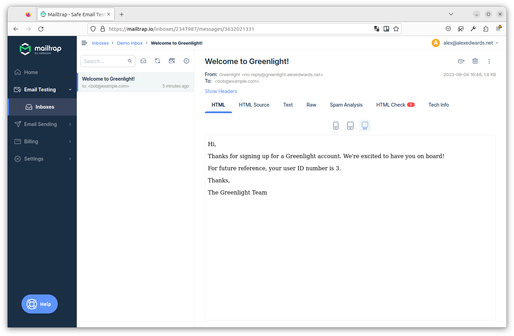

ارسال ایمیل خوشآمدگویی
حالا که محتوای ایمیل خوشآمدگویی را نوشتیم، بیایید کد ارسال آن را بسازیم.
برای ارسال ایمیل میتوانیم از پکیج net/smtp زبان Go در کتابخانه استاندارد استفاده کنیم. اما متأسفانه این پکیج چند سالی است که یخ زده و از برخی ویژگیهایی که در سناریوهای پیشرفتهتر به آنها نیاز دارید، مانند افزودن پیوستها، پشتیبانی نمیکند.
بنابراین به جای آن، پیشنهاد میکنم از پکیج شخص ثالث wneessen/go-mail برای کمک به ارسال ایمیلها استفاده کنید. این پکیج به خوبی تست شده، مستندات خوبی دارد و API بسیار واضح و کاربردیای ارائه میدهد.
اگر همراه با ما کدنویسی میکنید، لطفاً با استفاده از go get آخرین نسخه این پکیج را دانلود کنید:
$ go get github.com/wneessen/go-mail@latest go: added github.com/wneessen/go-mail v0.6.2
ایجاد یک کمککننده ایمیل
به جای نوشتن تمام کد برای ارسال ایمیل خوشآمدگویی در registerUserHandler خود، در این فصل یک پکیج جدید internal/mailer ایجاد میکنیم که منطق پردازش قالبهای ایمیل و ارسال ایمیلها را در خود جای میدهد.
علاوه بر این، از قابلیت فایلهای تعبیهشده (embedded files) Go نیز استفاده خواهیم کرد، به طوری که فایلهای قالب ایمیل در باینری ما تعبیه خواهند شد هنگامی که آن را بعداً بسازیم. این بسیار عالی است زیرا به این معنی است که مجبور نخواهیم بود این فایلهای قالب را به طور جداگانه به سرور تولیدی خود استقرار دهیم.
احتمالاً سادهترین راه برای نشان دادن نحوه کار این است که مستقیماً وارد کد شویم و جزئیات را در طول مسیر توضیح دهیم.
بیایید با ایجاد یک فایل جدید internal/mailer/mailer.go شروع کنیم:
$ touch internal/mailer/mailer.go
و سپس کد زیر را اضافه کنید:
package mailer import ( "bytes" "embed" "time" "github.com/wneessen/go-mail" // Import the html/template and text/template packages. Because these share the same // package name ("template") we need to disambiguate them and alias them to ht and tt // respectively. ht "html/template" tt "text/template" ) // Below we declare a new variable with the type embed.FS (embedded file system) to hold // our email templates. This has a comment directive in the format `//go:embed <path>` // IMMEDIATELY ABOVE it, which indicates to Go that we want to store the contents of the // ./templates directory in the templateFS embedded file system variable. // ↓↓↓ //go:embed "templates" var templateFS embed.FS // Define a Mailer struct which contains a mail.Client instance (used to connect to a // SMTP server) and the sender information for your emails (the name and address you // want the email to be from, such as "Alice Smith <alice@example.com>"). type Mailer struct { client *mail.Client sender string } func New(host string, port int, username, password, sender string) (*Mailer, error) { // Initialize a new mail.Dialer instance with the given SMTP server settings. We // also configure this to use a 5-second timeout whenever we send an email. I've // split the NewClient arguments over multiple lines for readability, but you can // make this a single line if you prefer. client, err := mail.NewClient( host, mail.WithSMTPAuth(mail.SMTPAuthLogin), mail.WithPort(port), mail.WithUsername(username), mail.WithPassword(password), mail.WithTimeout(5*time.Second), ) if err != nil { return nil, err } // Return a Mailer instance containing the client and sender information. mailer := &Mailer{ client: client, sender: sender, } return mailer, nil } // Define a Send() method on the Mailer type. This takes the recipient email address // as the first parameter, the name of the file containing the templates, and any // dynamic data for the templates as an any parameter. func (m *Mailer) Send(recipient string, templateFile string, data any) error { // Use the ParseFS() method from text/template to parse the required template file // from the embedded file system. textTmpl, err := tt.New("").ParseFS(templateFS, "templates/"+templateFile) if err != nil { return err } // Execute the named template "subject", passing in the dynamic data and storing the // result in a bytes.Buffer variable. subject := new(bytes.Buffer) err = textTmpl.ExecuteTemplate(subject, "subject", data) if err != nil { return err } // Follow the same pattern to execute the "plainBody" template and store the result // in the plainBody variable. plainBody := new(bytes.Buffer) err = textTmpl.ExecuteTemplate(plainBody, "plainBody", data) if err != nil { return err } // Use the ParseFS() method from html/template this time to parse the required template // file from the embedded file system. htmlTmpl, err := ht.New("").ParseFS(templateFS, "templates/"+templateFile) if err != nil { return err } // And execute the "htmlBody" template and store the result in the htmlBody variable. htmlBody := new(bytes.Buffer) err = htmlTmpl.ExecuteTemplate(htmlBody, "htmlBody", data) if err != nil { return err } // Use the mail.NewMsg() function to initialize a new mail.Msg instance. // Then we use the To(), From() and Subject() methods to set the email recipient, // sender and subject headers, the SetBodyString() method to set the plain-text body, // and the AddAlternativeString() method to set the HTML body. msg := mail.NewMsg() err = msg.To(recipient) if err != nil { return err } err = msg.From(m.sender) if err != nil { return err } msg.Subject(subject.String()) msg.SetBodyString(mail.TypeTextPlain, plainBody.String()) msg.AddAlternativeString(mail.TypeTextHTML, htmlBody.String()) // Call the DialAndSend() method on the dialer, passing in the message to send. This // opens a connection to the SMTP server, sends the message, then closes the // connection. return m.client.DialAndSend(msg) }
استفاده از سیستمفایلهای تعبیهشده
قبل از ادامه، بیایید یک لحظه سریع برای بحث دقیقتر در مورد سیستمفایلهای تعبیهشده وقت بگذاریم، زیرا چند چیز وجود دارد که ممکن است هنگام مواجهه اولیه با آنها گیجکننده باشد.
شما فقط میتوانید از دستور
//go:embedروی متغیرهای سطح پکیج (global variables at package level) استفاده کنید، نه درون توابع یا متدها. اگر سعی کنید آن را در یک تابع یا متد استفاده کنید، خطای"go:embed cannot apply to var inside func"را در زمان کامپایل دریافت خواهید کرد.هنگامی که از دستور
//go:embed "<path>"برای ایجاد یک سیستمفایل تعبیهشده استفاده میکنید، مسیر باید نسبت به فایل کد منبع حاوی دستور باشد. بنابراین در مورد ما،//go:embed "templates"محتوای دایرکتوری درinternal/mailer/templatesرا تعبیه میکند.سیستمفایل تعبیهشده در دایرکتوریای ریشه دارد که حاوی دستور
//go:embedاست. بنابراین در مورد ما، برای دریافت فایلuser_welcome.tmplباید آن را ازtemplates/user_welcome.tmplدر سیستمفایل تعبیهشده بازیابی کنیم.مسیرها نمیتوانند حاوی عناصر
.یا..باشند و همچنین نمیتوانند با/شروع یا تمام شوند. این اساساً شما را فقط به تعبیه فایلهایی محدود میکند که در همان دایرکتوری (یا زیر دایرکتوری) کد منبعی که دستور//go:embedرا دارد، قرار گرفتهاند.اگر مسیر برای یک دایرکتوری باشد، تمام فایلها به صورت بازگشتی تعبیه میشوند، به جز فایلهایی با نامهایی که با
.یا_شروع میشوند. اگر میخواهید این فایلها را شامل کنید، باید از کاراکتر wildcard*در مسیر استفاده کنید، مانند//go:embed "templates/*"شما میتوانید چندین دایرکتوری و فایل را در یک دستور مشخص کنید. به عنوان مثال:
//go:embed "images" "styles/css" "favicon.ico".جداساز مسیر باید همیشه اسلش رو به جلو (forward slash) باشد، حتی در ماشینهای Windows.
استفاده از کمککننده ایمیل ما
حالا که پکیج کمککننده ایمیل ما آماده است، باید آن را به بقیه کد خود در فایل cmd/api/main.go متصل کنیم. به طور خاص، باید دو کار انجام دهیم:
- کد خود را برای پذیرش تنظیمات پیکربندی سرور SMTP به عنوان پرچمهای خط فرمان (command-line flags) تطبیق دهیم.
- یک نمونه جدید
Mailerمقداردهی اولیه کنیم و آن را از طریق ساختارapplicationدر دسترس handlerهای خود قرار دهیم.
اگر همراه با ما پیش میروید، لطفاً مطمئن شوید که از تنظیمات سرور SMTP Mailtrap خود از فصل قبل به عنوان مقادیر پیشفرض برای پرچمهای خط فرمان در اینجا استفاده میکنید — نه مقادیر دقیقی که من در کد زیر استفاده میکنم.
package main import ( "context" "database/sql" "flag" "log/slog" "os" "time" "greenlight.alexedwards.net/internal/data" "greenlight.alexedwards.net/internal/mailer" // New import _ "github.com/lib/pq" ) const version = "1.0.0" // Update the config struct to hold the SMTP server settings. type config struct { port int env string db struct { dsn string maxOpenConns int maxIdleConns int maxIdleTime time.Duration } limiter struct { enabled bool rps float64 burst int } smtp struct { host string port int username string password string sender string } } // Update the application struct to hold a pointer to a new Mailer instance. type application struct { config config logger *slog.Logger models data.Models mailer *mailer.Mailer } func main() { var cfg config flag.IntVar(&cfg.port, "port", 4000, "API server port") flag.StringVar(&cfg.env, "env", "development", "Environment (development|staging|production)") flag.StringVar(&cfg.db.dsn, "db-dsn", os.Getenv("GREENLIGHT_DB_DSN"), "PostgreSQL DSN") flag.IntVar(&cfg.db.maxOpenConns, "db-max-open-conns", 25, "PostgreSQL max open connections") flag.IntVar(&cfg.db.maxIdleConns, "db-max-idle-conns", 25, "PostgreSQL max idle connections") flag.DurationVar(&cfg.db.maxIdleTime, "db-max-idle-time", 15*time.Minute, "PostgreSQL max connection idle time") flag.BoolVar(&cfg.limiter.enabled, "limiter-enabled", true, "Enable rate limiter") flag.Float64Var(&cfg.limiter.rps, "limiter-rps", 2, "Rate limiter maximum requests per second") flag.IntVar(&cfg.limiter.burst, "limiter-burst", 4, "Rate limiter maximum burst") // Read the SMTP server configuration settings into the config struct, using the // Mailtrap settings as the default values. IMPORTANT: If you're following along, // make sure to replace the default values for smtp-username and smtp-password // with your own Mailtrap credentials. flag.StringVar(&cfg.smtp.host, "smtp-host", "sandbox.smtp.mailtrap.io", "SMTP host") flag.IntVar(&cfg.smtp.port, "smtp-port", 25, "SMTP port") flag.StringVar(&cfg.smtp.username, "smtp-username", "a7420fc0883489", "SMTP username") flag.StringVar(&cfg.smtp.password, "smtp-password", "e75ffd0a3aa5ec", "SMTP password") flag.StringVar(&cfg.smtp.sender, "smtp-sender", "Greenlight <no-reply@greenlight.alexedwards.net>", "SMTP sender") flag.Parse() logger := slog.New(slog.NewTextHandler(os.Stdout, nil)) db, err := openDB(cfg) if err != nil { logger.Error(err.Error()) os.Exit(1) } defer db.Close() logger.Info("database connection pool established") // Initialize a new Mailer instance using the settings from the command line // flags. mailer, err := mailer.New(cfg.smtp.host, cfg.smtp.port, cfg.smtp.username, cfg.smtp.password, cfg.smtp.sender) if err != nil { logger.Error(err.Error()) os.Exit(1) } // And add it to the application struct. app := &application{ config: cfg, logger: logger, models: data.NewModels(db), mailer: mailer, } err = app.serve() if err != nil { logger.Error(err.Error()) os.Exit(1) } } ...
و سپس آخرین کاری که باید انجام دهیم این است که registerUserHandler خود را به روز کنیم تا واقعاً ایمیل را ارسال کند، که میتوانیم این کار را به این صورت انجام دهیم:
package main ... func (app *application) registerUserHandler(w http.ResponseWriter, r *http.Request) { ... // Nothing above here needs to change. // Call the Send() method on our Mailer, passing in the user's email address, // name of the template file, and the User struct containing the new user's data. err = app.mailer.Send(user.Email, "user_welcome.tmpl", user) if err != nil { app.serverErrorResponse(w, r, err) return } err = app.writeJSON(w, http.StatusCreated, envelope{"user": user}, nil) if err != nil { app.serverErrorResponse(w, r, err) } }
خب، بیایید این را امتحان کنیم!
برنامه را اجرا کنید، سپس در یک پنجره ترمینال دیگر از curl برای ثبت یک کاربر کاملاً جدید با آدرس ایمیل bob@example.com استفاده کنید:
$ BODY='{"name": "Bob Jones", "email": "bob@example.com", "password": "pa55word"}'
$ curl -w '\nTime: %{time_total}\n' -d "$BODY" localhost:4000/v1/users
{
"user": {
"id": 3,
"created_at": "2021-04-11T20:26:22+02:00",
"name": "Bob Jones",
"email": "bob@example.com",
"activated": false
}
}
Time: 2.331957
اگر همه چیز به درستی تنظیم شده باشد، باید پاسخ 201 Created حاوی جزئیات کاربر جدید را دریافت کنید، مشابه پاسخ بالا.
بررسی ایمیل در Mailtrap
اگر همراه با ما پیش رفتهاید و از اعتبارنامههای سرور SMTP Mailtrap استفاده میکنید، وقتی به حساب خود بازمیگردید باید اکنون ایمیل خوشآمدگویی برای bob@example.com را در صندوق Demo خود ببینید، مانند زیر:

اگر میخواهید، میتوانید روی تب Text کلیک کنید تا نسخه متن ساده ایمیل را ببینید، و تب Raw را برای دیدن ایمیل کامل شامل هدرها ببینید.
برای جمعبندی، ما در این فصل مسیر زیادی را طی کردیم. اما چیز خوب در مورد الگویی که ساختهایم این است که به راحتی قابل گسترش است. اگر بخواهیم در آینده ایمیلهای دیگری از برنامه خود ارسال کنیم، به سادگی میتوانیم یک فایل اضافی در پوشه internal/mailer/templates خود با محتوای ایمیل بسازیم و سپس آن را به همان شکلی که در اینجا انجام دادیم از handlerهای خود ارسال کنیم.
اطلاعات تکمیلی
تلاش مجدد برای ارسال ایمیل
اگر میخواهید، میتوانید فرآیند ارسال ایمیل را با افزودن برخی عملکردهای پایه «تلاش مجدد» به متد Mailer.Send() کمی مقاومتر کنید. به عنوان مثال:
func (m Mailer) Send(recipient, templateFile string, data any) error { ... // Try sending the email up to three times before aborting and returning the final // error. We sleep for 500 milliseconds between each attempt. for i := 1; i <= 3; i++ { err = m.client.DialAndSend(msg) if err == nil { return nil } // If it didn't work, sleep for a short time and retry. if i != 3 { time.Sleep(500 * time.Millisecond) } } return err }
این عملکرد تلاش مجدد یک افزودنی نسبتاً ساده به کد ما است، اما به افزایش احتمال ارسال موفقیتآمیز ایمیلها در صورت بروز مشکلات شبکه موقتی کمک میکند. اگر ایمیلها را در یک فرآیند پسزمینه ارسال میکنید (مانند کاری که در فصل بعدی انجام خواهیم داد)، ممکن است بخواهید مدت زمان خواب را در اینجا حتی بیشتر کنید، زیرا تأثیر مادی بر کلاینت نخواهد داشت و زمان بیشتری برای حل مشکلات موقتی فراهم میکند.